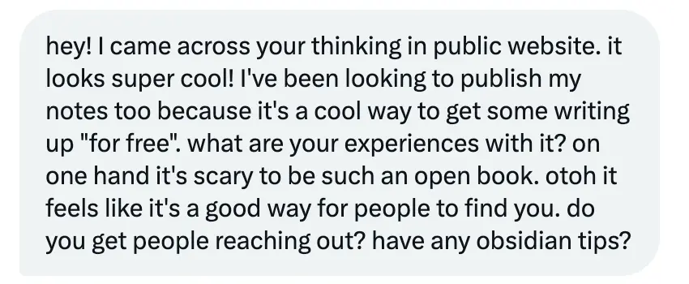
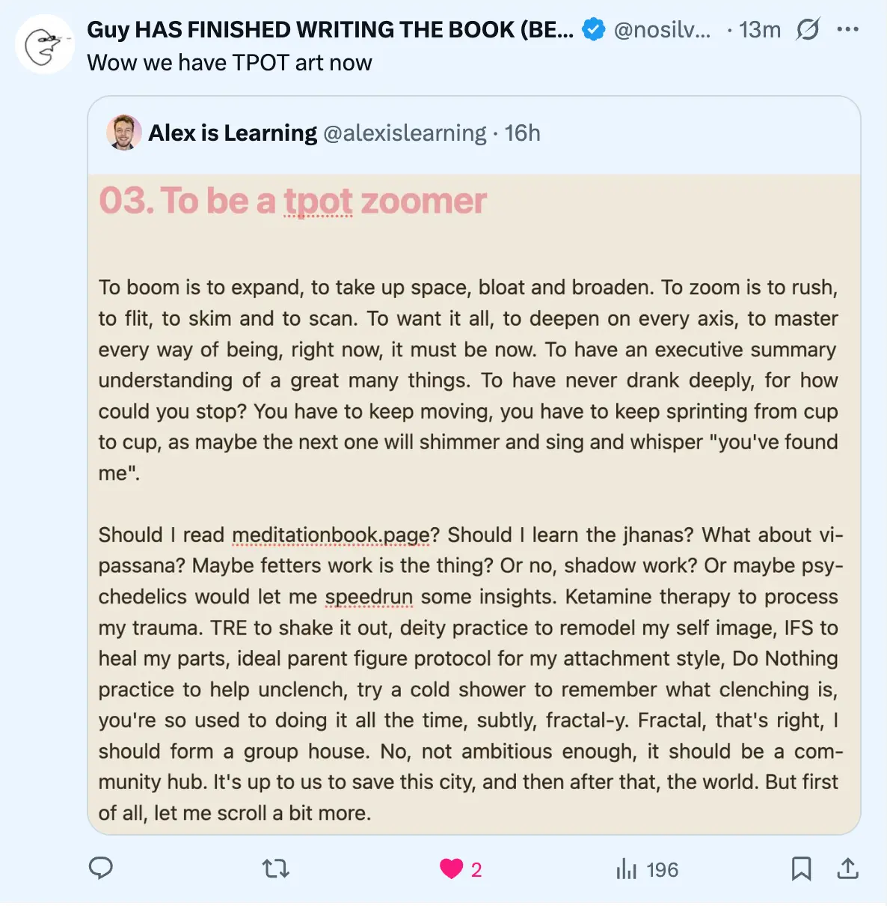

Work references
References from Managers
- Brent Baumgartner, founder of Refract, March 2025
- Ethan Alley, co-founder of Alvea, Jan 2023
- Robert Bölkow, Head of Operations at Alvea, Jan 2023
- Misc Alvea feedback, 2023
Co-thinking clients
- Huw, team lead at 80,000 Hours, July 2026
- Ediya testimonial interview 2026-04-28
April 2025 CV for Longview Philanthropy
- CV for Longview Philanthropy “Executive Assistant to the Office of the CEO” role. I was one of two finalists for this role, and was very excited about it as I’d be sat with the CEO (Simran) and Chief of Staff (Gavin) every day. Gavin was an executive assistant for 2 years before becoming the CoS at Longview. I was (and remain!) very excited at the idea of working with people who existed a few rungs above me in the competence/agency ladder, to pick up their tacit knowledge and rapidise my growth. (I was inspired by Daniel Chambliss’ paper “The Mundanity of Excellence”)
From friends that I’ve worked with
- Simmo, October 2025
- Conor, April 2025
References from Friends
At the start of 2025, I wrangled with all my info and hazy memories re: previous jobs and ended up with a CV that I was really pleased with, and a much stronger sense of “oh yeah, I can totally apply for great jobs, I’ve done some really good stuff.”
So this gave me the idea of reaching out to friends asking for little writeups on what they like about me, to make my non-work-related strengths more legible too.
I highly recommend doing this — it was so sweet.
❤️ Delia
Okay, Alex, it’s your energy. You have such a beautiful, loving, kind, fun, playful energy. You’re so funny and thoughtful; you think about things, you consider things. You’re interested in the world, in things, and you get excited about them. You’re always exploring, and trying things, and wanting to be the best version of yourself.
I love how you share your process along the way, so beautifully, vulnerably, openly, honestly. You’re someone who I’m just so excited about where your life is going. And I love it when I’m exposed to hearing about it, whether it’s through your tweets or videos or voice notes or writing or when we talk.
Basically, I just feel that you’re a kind, loving, good person with a good heart. Despite what you might have been through in your life, I really feel like you’re bringing goodness into the world, and it makes me happy and excited.
❤️ Attila
During my time at the Effective Altruist Hotel (CEEALAR), you quickly became one of the highlights of my stay. You’re insightful, mindful, and incredibly kind, with extensive knowledge of thinkers like Vervaeke and other philosophers. Even though you can be a bit withdrawn at times, your inquisitive nature and easy-going personality made it effortless to connect with you.
Our gym sessions were fantastic—you were always a great sport, encouraging and supportive. I genuinely hope we cross paths again, and I’d jump at any chance to work with you in the future.
My Microsolidarity Crew
I’m in a microsolidarity crew that my friend Simmo put together — we’ve been having fortnightly calls for nearly 2 years now (wild how the time has flown by!).
We’re a group of post-rationalist-y, emotional-processing-y people; sometimes we do Circling/Authentic-Relating-y practices, sometimes a “Case Clinic” where one person talks for 20 minutes about a problem in their life and then there are a few rounds of reflections etc.
❤️ Carmen
By quite a margin I think you are one of the people in my life I’ve seen grow the most in the past few years.
I feel privileged to have witnessed so many different “Alex eras” and have a lot of love for all the different versions of you — also the ones yet to emerge!
A few random reflections I have:
- I really enjoyed how early on you would admit when you were a bit distracted or disinterested on crew calls.
- Some of your jokes during calls are just so spot on and I enjoy your humour.
- I’m in awe of how many times you’ve picked yourself up from being in a bit of a rut.
- I love how much time you’ve spent clarifying for yourself what matters to you in life — often taking the unconventional path.
- I have fond memories of the emotional work you’ve done around your ex-girlfriend and better understanding what happened when you broke up.
- Seeing you and your dog — so precious.
Very few people I know have impressed me as much with their intellectual, spiritual, emotional, and social growth in the past few years as you have.
Thank you for being a good friend, Alex. ❤️
❤️ Johnson
For Alex Large
When I first met Alex in person in Taiwan a year or two ago, he was a sweet, kind, quiet, shy guy. He had left his job, was nomadic, and I respected his courage, and could see how it was tough on him.
Over the last year or two, in crewing regularly with him, I’ve seen him grow substantially, in terms of his okayness with himself, his circumstances, and relationally.
There’s a calmness, centeredness in himself that I’ve been impressed by seeing in Alex. I’ve admired his commitment to his pursuits — whether that’s making a song/YouTube video every day, or diving into getting better at rationality.
These days I feel safer with him and able to go into more challenging waters. And I even see it in how the women in our crew respond to him.
I don’t know if he’s gotten funnier or something, but his memes lately have been killer.
❤️ Trish
(Transcribed from a voice note)
Let me think about the ways that I’ve witnessed you and the things that I like about you.
The first thing that comes to mind is your comedic humility about some of your life circumstances. The way you carry yourself around those things is really inspiring and beautiful and very centred.
There’s something I recognise in you that I want to see in my own partnership — that centre point of knowing who you are and standing in that, even when some things aren’t ideal.
I’ve witnessed you going into spaces of self-reflection and growth, and beautifully developing yourself, while not becoming overly tied or tortured by the category of “self help,” which I find admirable.
And finally, your willingness to help the people you care about — when someone needs a resource, or a spreadsheet, or some structure — you show up. I’ve just felt really supported by you, and that’s a beautiful gift.
Accountability Group
❤️ Simmo (re: being a CEO)
Let’s assume you’re targeting “high impact leader”. I think there are some core traits which are like agency, which I think you have in extremely high amounts.
I think you have the potential to select cause area well, which is the most important thing in a sense in terms of impact.
I think there’s a question mark over people management — I don’t know that you have much in the way of leading an organisation, or leading a whole team of people.
I think definitely, if we lived in a normal world (that is, one where AI timelines weren’t a concern), you could become an unbelievably successful CEO in a small number of years.
You’ve got the intelligence and the work ethic, the ability to work incredibly hard, the ability to learn anything really effectively.
So in a normal world, absolutely no doubt whatsoever, I’d bet on you as much as I’d bet on anyone I’ve ever met.
Misc
Oct 2025
Sep 2025
- Twitter thread of Ship It Week compliments
August 2025


- Some stuff here → What could the Alexnaissance look like?